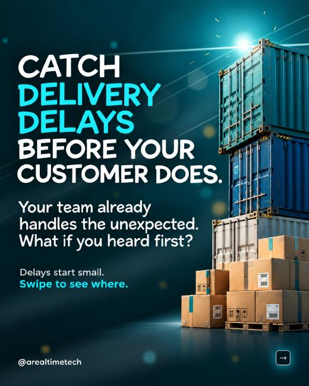
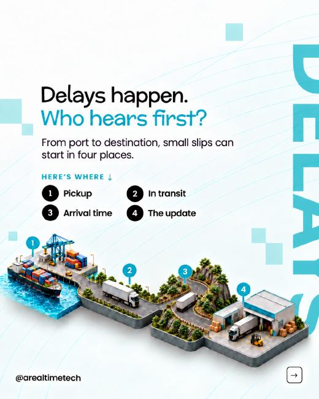
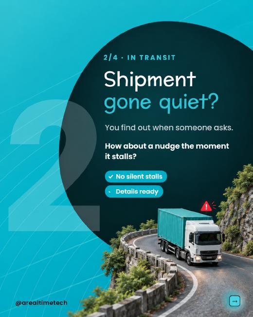
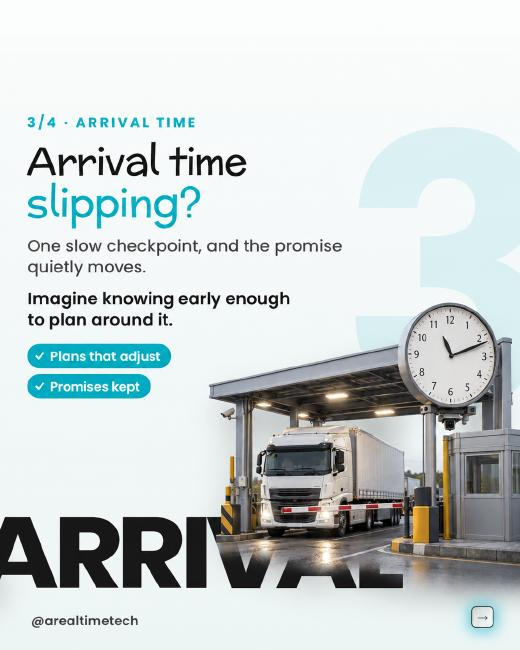

ART · 7 CALLS BEHIND ONE CONTAINER CONTENT + DESIGN STORYBOARD
01 / 07 · COVER
7 CALLS. ONE CONTAINER. EVERY LOOSE END LANDS ON YOU.
Checking details. Relaying changes. Chasing confirmations. The coordination becomes your second job.

Reference page 1: composition and finish only.
WHAT THE ELEMENT MUST NARRATE
One container dominates the right edge. At its base, the phone, call slips and release docket belong to the same dispatch situation. Several updates have arrived, but one unresolved docket field still holds the release. The focal conflict is completed calls versus unfinished work.
PLACEMENT & READING ORDER
Narrow left type column; tall container cropped along the right edge. One headline and one subtitle, with no additional closing sentence. The unresolved field is the only amber focal point.
WHY THIS SLIDE COMES NEXT
The cover establishes the hidden coordination burden. Slide 2 shows the first reason an update is not enough.
ART · 7 CALLS BEHIND ONE CONTAINER CONTENT + DESIGN STORYBOARD
02 / 07 · CHECK THE ANSWER
Cargo ready. Booking out of date.
The supplier confirms the goods. The latest packing list shows a different load.
ART checks the revision against the booking and follows up on the missing corrections.

Reference page 2: composition and finish only.
WHAT THE ELEMENT MUST NARRATE
Ready cargo carries a green inspection tag, yet release remains closed. A close foreground view of the document-check window shows a conflicting quantity on the packing list and booking. Cargo readiness and record readiness must visibly disagree. Use naturally scaled documents in the window, with a deliberate close camera angle that makes the conflicting fields visible.
PLACEMENT & READING ORDER
Light slide, copy upper-left. A continuous dispatch lane leads from ready goods to the held release; the check window is the foreground focal point. No giant stand-alone papers or unrelated comparison icon.
WHY THIS SLIDE COMES NEXT
Correcting the record resolves one mismatch. Slide 3 asks what the revised load changes elsewhere.
ART · 7 CALLS BEHIND ONE CONTAINER CONTENT + DESIGN STORYBOARD
03 / 07 · CHECK THE CONSEQUENCES
The load changed. The rest of the plan didn't.
More cargo can change vehicle capacity, pickup arrangements and shipping instructions.
ART identifies what the revision affects and coordinates the required updates.

Reference page 4: composition and finish only.
WHAT THE ELEMENT MUST NARRATE
The booked loading footprint is already full. Additional cargo extends beyond it into the dispatch lane. The same scene includes the pickup schedule and booking sleeve awaiting recheck. The extra load must visibly disrupt the original arrangement, rather than appear as decorative boxes beside documents.
PLACEMENT & READING ORDER
Aqua with one dark organic text field, matching the reference's offset composition. Planning scene crosses the lower-left edge. The revised load is the focal point; schedule and paperwork are secondary consequences.
WHY THIS SLIDE COMES NEXT
The wider plan needs checking. Slide 4 makes a timing conflict immediately concrete.
ART · 7 CALLS BEHIND ONE CONTAINER CONTENT + DESIGN STORYBOARD
04 / 07 · CHECK THE HANDOFF WINDOW
Truck at 4 PM. Loading closes at 3 PM.
Both teams confirmed. The handoff still fails.
ART checks the timings together and seeks a pickup that meets the loading window.

Reference page 5: composition and finish only.
WHAT THE ELEMENT MUST NARRATE
The truck waits outside a closed loading bay. The dock clock reads 3 PM and the loading status is closed. The copy states the truck's 4 PM commitment. The relationship among truck, clock and closed bay must explain the failed handoff at a glance.
PLACEMENT & READING ORDER
Light background, shared left text edge, restrained ghost numeral. Arrival and loading times receive the same typographic weight. Crop the scene to the lower-right, while keeping the clock, truck and closed bay visible.
WHY THIS SLIDE COMES NEXT
A conflict has been identified. Slide 5 gives the person a meaningful choice before a revised instruction is issued.
ART · 7 CALLS BEHIND ONE CONTAINER CONTENT + DESIGN STORYBOARD
05 / 07 · BRING THE DECISION
Your next call should be a decision.
Keep the cutoff with a costlier pickup—or take the later departure?
ART brings the options, cost and timing impact together. Decisions outside your rules reach you with context.
Reference page 2: composition and finish only.
WHAT THE ELEMENT MUST NARRATE
Two feasible routes lead to the same departure terminal. One short route passes a paid express pickup point; the other reaches a later departure through a waiting bay. Show a genuine trade-off: neither path is a red dead end. Small, typeset route labels identify the choices without repeating the paragraph.
PLACEMENT & READING ORDER
Deep blue-green, white headline with one aqua phrase. Copy at upper-left; one connected route scene below, angled toward the shared destination. Keep cost and time cues subordinate to the two paths.
WHY THIS SLIDE COMES NEXT
Once the decision is made, the revised plan must reach the people who will act on it.
ART · 7 CALLS BEHIND ONE CONTAINER CONTENT + DESIGN STORYBOARD
06 / 07 · FINISH THE HANDOFF
A new plan only works when someone acts on it.
The revised pickup is sent. The transporter still has the old instruction.
ART checks acknowledgment and follows the required action through.
Reference page 4: composition and finish only.
WHAT THE ELEMENT MUST NARRATE
At the dispatch pass-through, the revised 2 PM instruction remains in the outgoing tray. At the key-collection point, the old 4 PM instruction is already attached to the transporter's keys. The empty handoff position between them carries one amber pending marker. These illustrative times connect directly to the 3 PM loading cutoff.
PLACEMENT & READING ORDER
Aqua, ink text, compact copy block with deliberate line breaks. A close cutaway shows only the outgoing tray, transfer position and issued instruction/key rack. No truck, full office fit-out or decorative stationary.
WHY THIS SLIDE COMES NEXT
The handoff is followed through. The closing states the benefit without introducing ART again.
ART · 7 CALLS BEHIND ONE CONTAINER CONTENT + DESIGN STORYBOARD
07 / 07 · CLOSE WITH THE BENEFIT
Move the container. Get your day back.
ART checks what changed, coordinates what follows and brings the decisions that need you.
DM “CONTAINER” to explore your shipment workflow.
Reference page 9: composition and finish only.
WHAT THE ELEMENT MUST NARRATE
The closing is led by the message and CTA, as in the reference. A new illustration is not necessary. The visual resolution comes from clear, settled typography, generous space and one obvious action.
PLACEMENT & READING ORDER
Deep blue-green. Small aqua-and-white logo at top-left. Large centered Poppins Bold headline, short supporting sentence, restrained downward cue and one aqua CTA pill. No object row competing with the closing.
WHY THIS SLIDE COMES NEXT
The product value is connected follow-through, with human judgment used where it matters.